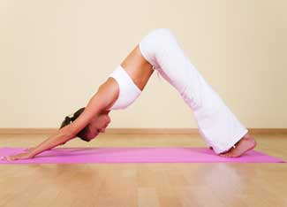

People are drawn to yoga for a number of reasons, including exercise, stress relief or to alleviate pain. But many yoga students are surprised to discover that a strong, flexible body isn't the only benefit of regular yoga practice.
The Sankskrit term 'yoga' often is translated as 'yoke' or 'union.' In yoga practice, the student works toward a union of the mental and physical self. This union is considered the essential self. As part of this practice, a student learns to quiet the mind - removing mental clutter and creating focus - which can help reduce stress and achieve a calmer, clearer mental state.
Most classes in the United States teach a form of Hatha yoga, which focuses primarily on the asanas (poses) and breathwork. Within Hatha yoga, there are a variety of disciplines. Two schools of Hatha yoga popularly taught around the world are Ashtanga and Iyengar - but they are only two of many.
Check your local community or yoga center for a certified yoga instructor in your area. You can also try yoga at home. A great collection of poses (with photos and notes) can be found here. Keep in mind that while yoga requires discipline and work, it should not create pain - a healthy yoga practice is the antithesis of the traditional "no pain, no gain" approach. During your practice, you should only remain in poses if you're comfortable, as forcing a pose can lead to injury. Remember, it's more important to discover how your body works than to achieve the full pose. Just use common sense, pay attention to your body and breathing, and enjoy this great exercise for your body and your mind - you might just be surprised at how fun and refreshing it can be!
Learn more about yoga in The Yoga Year: A Seasonal Guide to Asanas, Breathing Exercises, and Inspiration by Celia Toler, or in Light on Yoga by B.K.S. Iyengar, a guide to both the practice and philosophy of yoga, including photos and detailed descriptions of all of the poses and breathing exercises.
Have you tried yoga? Share your experiences in the comments section below.
|
 ISTOCKPHOTO Adho Mukha Svanasana, or Downward-facing Dog, is a basic pose that can be practiced at any point during a yoga session. |
|
|